Certifications
Welcome to my Certifications page, where you can explore my journey of acquiring valuable certifications in the field of cybersecurity. These certifications represent my commitment to continuous learning and my dedication to staying at the forefront of the ever-evolving world of digital security.
Each certification showcases my expertise in specific areas of cybersecurity, ranging from industry-standard certifications like Google CyberSecurity Professional to specialized certifications in threat analysis and risk assessment. These qualifications not only validate my knowledge but also demonstrate my readiness to tackle complex security challenges.
Feel free to browse through the list of certifications to gain insights into my skills and areas of specialization. If you have any questions or would like to discuss how my certifications can contribute to your organization's security goals, please don't hesitate to reach out.
- Automate Cybersecurity Tasks with Python
- Assets, Threats, and Vulnerabilities
- Sound the Alarm: Detection and Response
- Tools of the Trade: Linux and SQL
- Google Cyber Security Professional
- Qualys Vulnerability Management
- Cybersecurity Masterclass SOC Analyst
 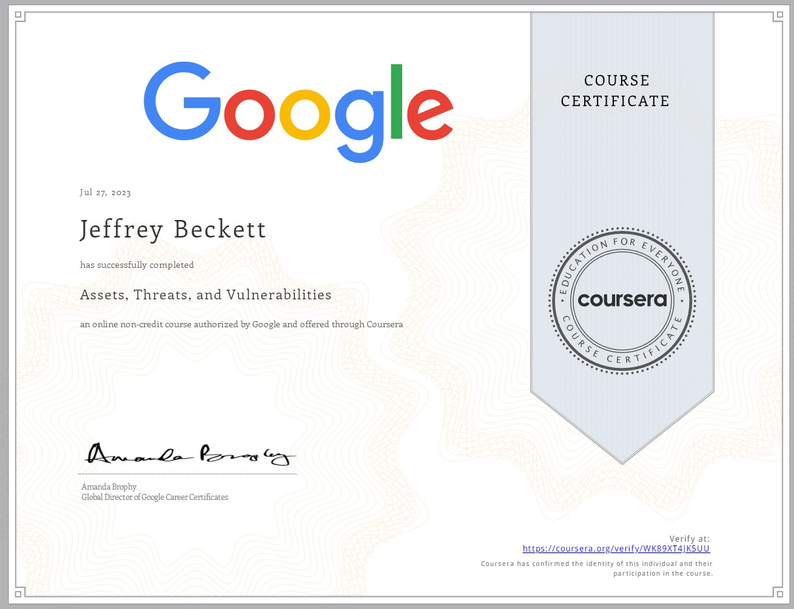
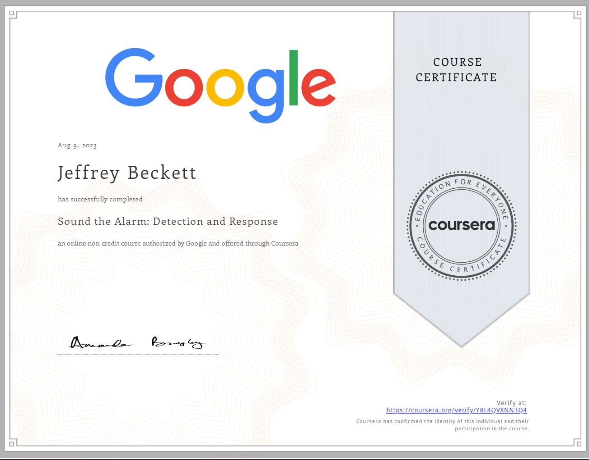
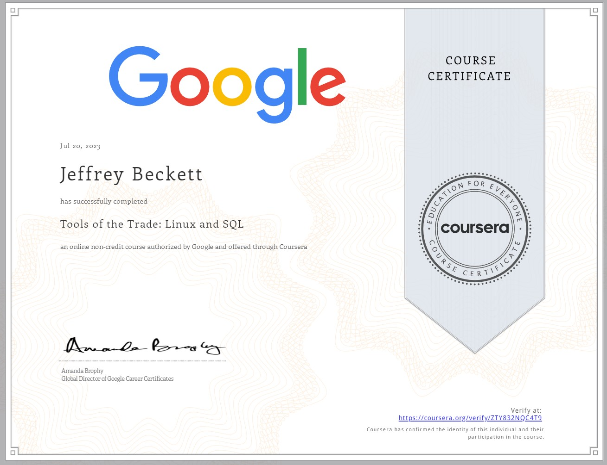
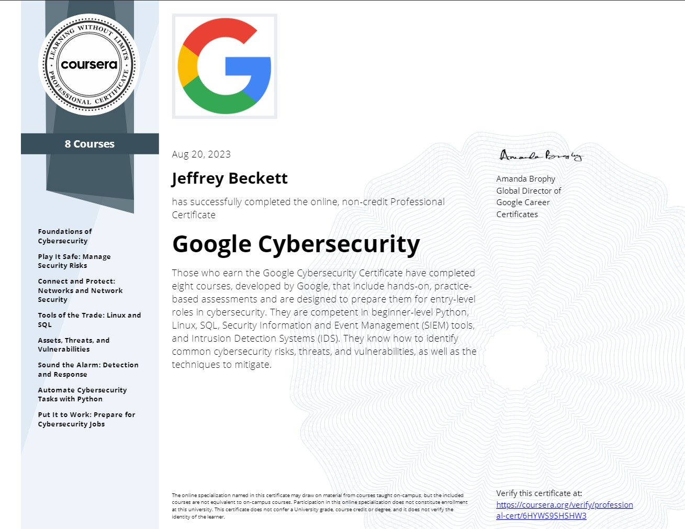
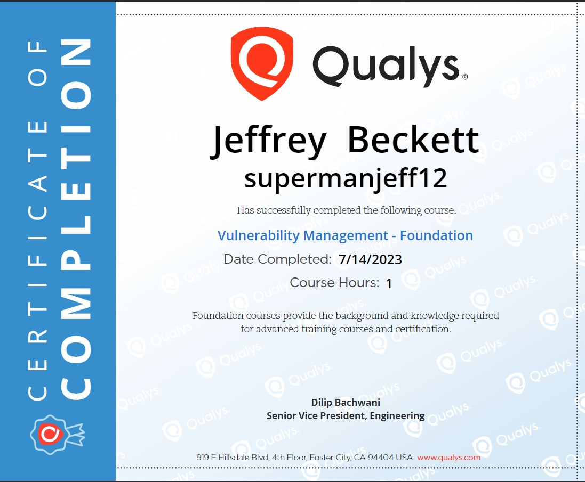
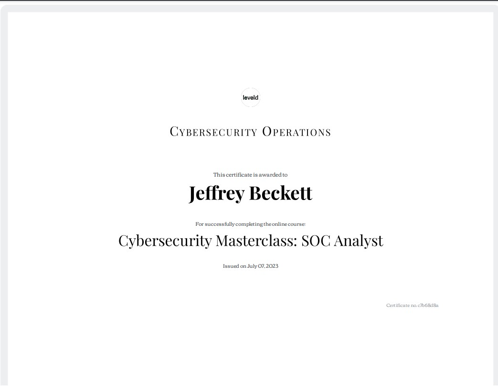
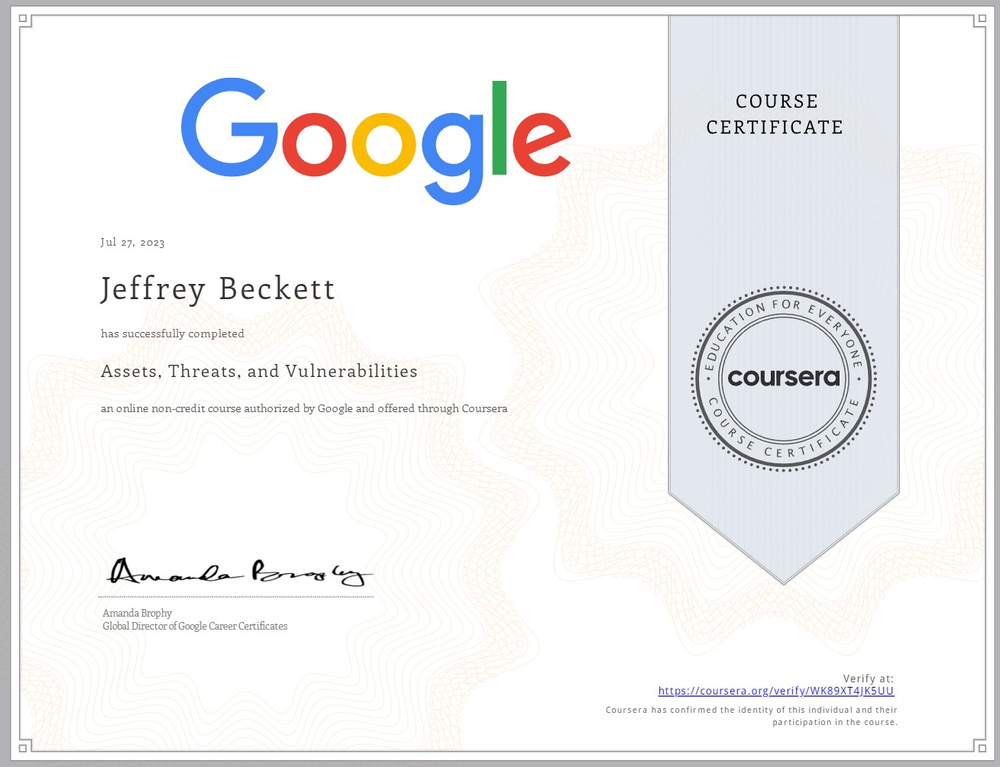
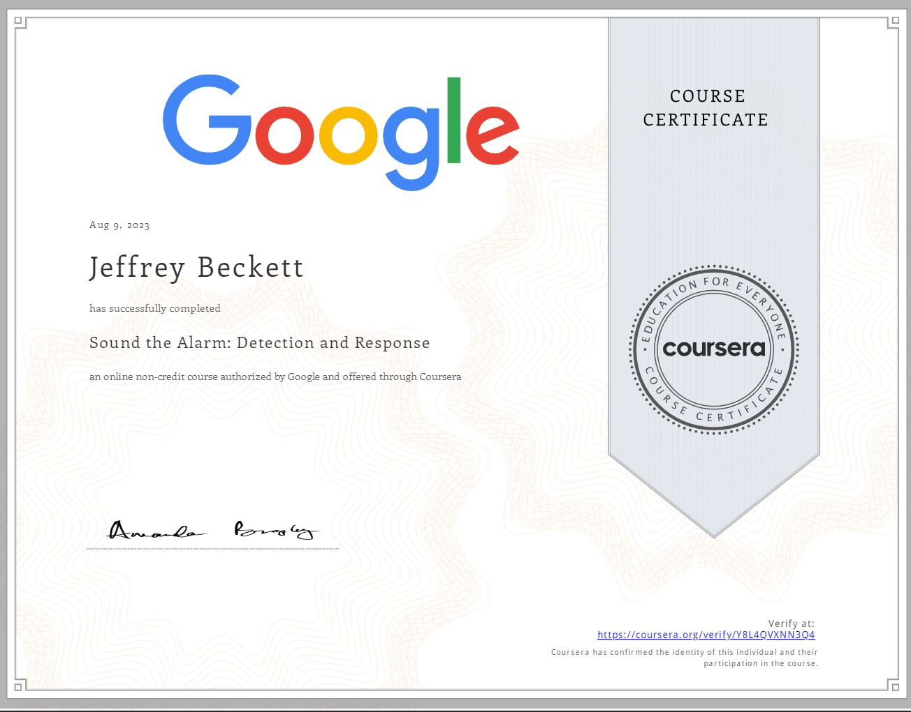
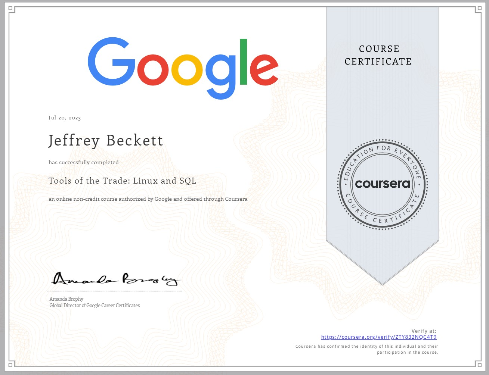
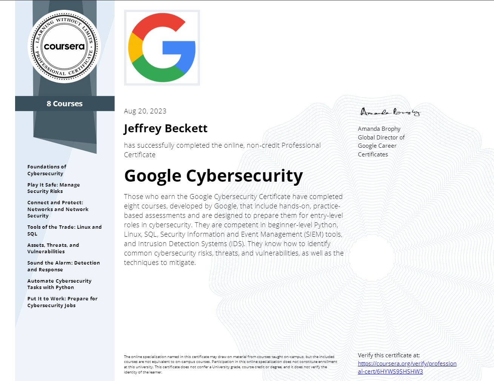
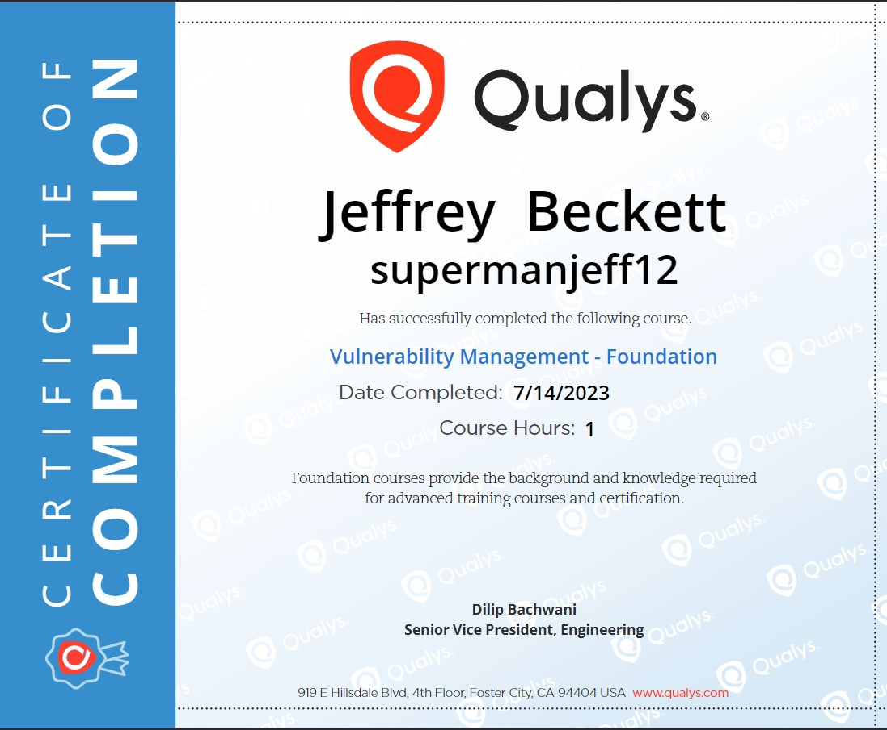
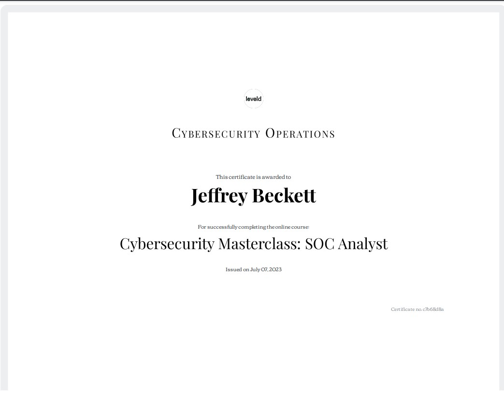